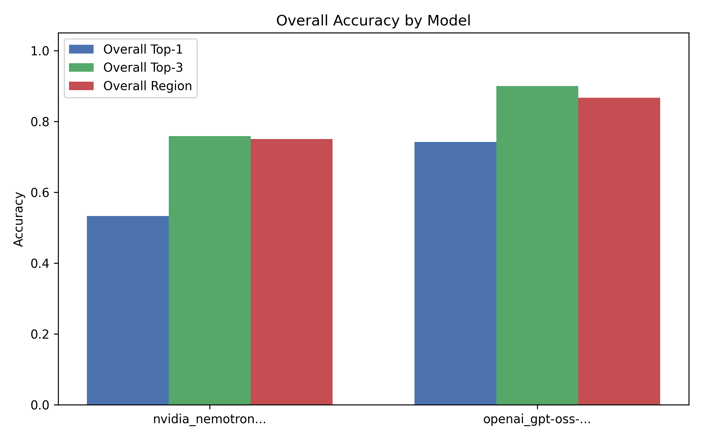
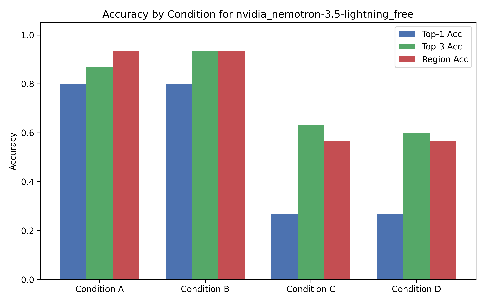
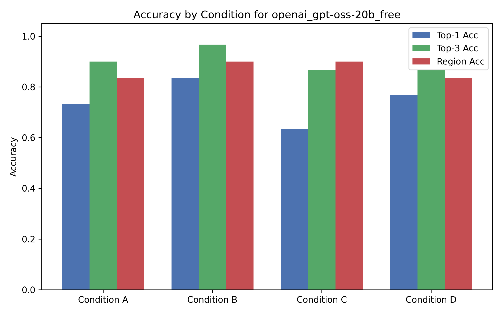

1. Overview
Project Goals: This study evaluates the effectiveness of Large Language Models (LLMs) in localizing faults within buggy Python methods. We examine performance under varying levels of contextual information, including providing tests and Spectrum-Based Fault Localization (SBFL) data (specifically, Tarantula rankings).
Benchmark Used: A curated subset of 30 methods from the OpenAI HumanEval dataset (chosen to ensure each has a natural-language specification and at least 10 tests), each mutated to contain exactly one testable, localizable bug.
Summary of Findings: Providing SBFL rankings (Tarantula) alongside the source code actually degraded performance for the models tested in this experiment. Providing tests alone (Condition B) yielded the highest accuracy. The models struggled to correctly utilize the numerical SBFL rankings, often performing worse than when given just the code or code with tests.
2. Dataset
Source: openai/human-eval
Number of Methods: 30
Total Tests: 376
Original Test Coverage: 99% overall line coverage across the 30 benchmark methods.
Test Extraction Strategy: The tests for each method come directly from the official OpenAI HumanEval dataset. In the raw dataset, tests are provided as a single check() function containing multiple assertions. We used Python's ast module to parse this block and extract each assert statement into its own standalone pytest function. This separation is critical for Spectrum-Based Fault Localization (Tarantula), as it requires an accurate count of both passing and failing tests; if all assertions were left in a single block, execution would halt at the first failure, masking the results of subsequent assertions.
Mutation Strategy: We utilized a custom AST-based mutation generator (ast.NodeTransformer) to automatically generate mutants. The script parses the original Python method into an Abstract Syntax Tree (AST), traverses it to locate targeted operators (binary, comparison, boolean) and integer constants. For each method, it systematically applies exactly one modification (e.g., swapping a single operator for its logical opposite, OR incrementing a single integer constant by 1), ensuring that each mutant contains exactly one localizable fault. For each generated mutant candidate, the AST is unparsed back into source code, and a rigorous automated testing validation process is applied. Crucially, the generator preferentially selects a mutant that causes partial test failure (some passing tests, some failing tests) to provide the optimal signal-to-noise ratio for Spectrum-Based Fault Localization, falling back to fully failing mutants only if no partial failure exists.
Example of a Bug: Swapping a single arithmetic operator (e.g., modifying n - 1 to n + 1) in a prime-checking function, OR changing a single integer constant like 0 to 1.
Dataset Table
| Task ID | Entry Point | Total Tests | Original Passed | Buggy Passed | Buggy Failed |
|---|---|---|---|---|---|
| HumanEval/31 | is_prime | 13 | 13 | 12 | 1 |
| HumanEval/39 | prime_fib | 10 | 10 | 3 | 7 |
| HumanEval/56 | correct_bracketing | 12 | 12 | 8 | 4 |
| HumanEval/61 | correct_bracketing | 12 | 12 | 8 | 4 |
| HumanEval/66 | digitSum | 10 | 10 | 9 | 1 |
| HumanEval/68 | pluck | 10 | 10 | 6 | 4 |
| HumanEval/69 | search | 25 | 25 | 20 | 5 |
| HumanEval/70 | strange_sort_list | 10 | 10 | 2 | 8 |
| HumanEval/74 | total_match | 11 | 11 | 10 | 1 |
| HumanEval/75 | is_multiply_prime | 10 | 10 | 9 | 1 |
| HumanEval/76 | is_simple_power | 10 | 10 | 9 | 1 |
| HumanEval/82 | prime_length | 16 | 16 | 15 | 1 |
| HumanEval/92 | any_int | 10 | 10 | 9 | 1 |
| HumanEval/96 | count_up_to | 10 | 10 | 2 | 8 |
| HumanEval/103 | rounded_avg | 12 | 12 | 11 | 1 |
| HumanEval/114 | minSubArraySum | 12 | 12 | 9 | 3 |
| HumanEval/118 | get_closest_vowel | 14 | 14 | 13 | 1 |
| HumanEval/119 | match_parens | 12 | 12 | 9 | 3 |
| HumanEval/120 | maximum | 11 | 11 | 8 | 3 |
| HumanEval/124 | valid_date | 16 | 16 | 15 | 1 |
| HumanEval/126 | is_sorted | 13 | 13 | 12 | 1 |
| HumanEval/128 | prod_signs | 10 | 10 | 8 | 2 |
| HumanEval/129 | minPath | 11 | 11 | 10 | 1 |
| HumanEval/130 | tri | 10 | 10 | 9 | 1 |
| HumanEval/132 | is_nested | 14 | 14 | 12 | 2 |
| HumanEval/133 | sum_squares | 12 | 12 | 1 | 11 |
| HumanEval/134 | check_if_last_char_is_a_letter | 11 | 11 | 10 | 1 |
| HumanEval/136 | largest_smallest_integers | 12 | 12 | 9 | 3 |
| HumanEval/141 | file_name_check | 26 | 26 | 25 | 1 |
| HumanEval/142 | sum_squares | 11 | 11 | 7 | 4 |
3. Experimental Design
Models Evaluated:
nvidia_nemotron-3.5-lightning_freeopenai_gpt-oss-20b_free
Information Conditions:
- Condition A (Code Only): Buggy method + intended behavior.
- Condition B (Code + Tests): Condition A + passing/failing tests.
- Condition C (Code + SBFL): Condition A + Tarantula ranking.
- Condition D (Code + Tests + SBFL): Condition B + Tarantula ranking.
Prompt Templates:
The base prompt template used for all models under Condition A is shown below.
You are an expert software developer and tester.
Do not repair the program. Your task is only to identify the most likely faulty line or small faulty region.
You must return ONLY a valid JSON object exactly matching this structure, with no other conversational text or markdown formatting (do not wrap in ```json).
IMPORTANT: The `top_3_lines` list MUST be ordered by suspiciousness, from most suspicious (1st) to least suspicious (3rd).
{
"top_1_line": 12,
"top_3_lines": [12, 14, 9],
"faulty_region": "loop condition",
"explanation": "The loop condition may terminate before the last candidate is checked."
}
Here is the buggy Python method. The docstring describes its intended behavior.
Lines are numbered for your reference.
```python
{BUGGY_CODE}
```
Provide your JSON response below.
For Condition B, the following tests section (dynamically populated) was appended before the JSON format request:
### Test Suite
Here is the full test suite code executed against the buggy method.
```python
{TEST_SUITE_CODE}
```
The following tests failed with these errors:
- test_example_3:
assert is_prime(4) == False
E assert True == False
E + where True = is_prime(4)
Provide your JSON response below.
For Condition C, the following SBFL ranking section was appended before the JSON format request:
### Tarantula Suspiciousness Ranking
The following lines have been ranked by the Tarantula spectrum-based fault localization formula. A higher score means the line is more suspicious.
- Line 25: 0.632
- Line 22: 0.522
- Line 20: 0.500
- Line 3: 0.000
- Line 21: 0.000
- Line 23: 0.000
- Line 24: 0.000
Provide your JSON response below.
For Condition D, both the tests and SBFL sections were appended.
Metrics: Top-1 exact-line accuracy, Top-3 accuracy, Region accuracy, Mean Reciprocal Rank (MRR), and Invalid-output rate.
Region Accuracy Details: Because evaluating the natural language faulty_region description programmatically is difficult, "Region Accuracy" in this study is calculated by checking if the model's top_1_line prediction falls within a +/- 2 line radius of the exact ground truth line.
MRR Calculation Details: For each evaluated method, the ground truth line is matched against the LLM's predictions. If it exactly matches the Top-1 prediction, the rank is 1. If it appears in the Top-3 list, the rank is its index plus 1 (e.g., 2 or 3). If it is not in the Top-3, the rank is 0. The reciprocal rank is calculated as 1.0 / rank (or 0.0 if the rank is 0). The MRR for a condition is the average of these reciprocal ranks across all methods.
Procedure: For each of the 30 methods, the 4 conditions were queried 1 time (1 repetition) per model at a temperature of 0.0, to ensure maximum determinism. Outputs were then parsed and evaluated against ground truth lines.
4. Validation of the Experiment Infrastructure
To ensure the reliability of this empirical study, the automated experimental pipeline was rigorously tested using `pytest`.
- Mutation Generation (
test_mutant_generator.py): Tests confirm that exactly one valid mutant is selected, the original passes, the mutant fails at least one test, and equivalent mutants are discarded. - SBFL & Coverage (
test_sbfl_computation.py,test_coverage_aggregation.py): Unit tests validate the Tarantula formula against known mock pass/fail execution matrices, and ensure coverage logs are parsed correctly. - Metrics, Results & Parsing (
test_metrics_and_parsing.py): Tests confirm that both well-formed and slightly malformed JSON outputs are parsed correctly from the LLM, and that metrics calculations (Top-1, MRR) are exact. - HTML Generation (
test_html_generation.py): Verifies that the final report structure is built properly from the generated data. - Number of Infrastructure Tests: 33 infrastructure tests were executed.
- Coverage: The test suite achieved an overall coverage of 83% across all scripts, with over 85% average line coverage on the core experimental logic including mutation generation, SBFL computation, metrics calculation, prompt generation, plot generation, and report generation.
Examples of Bugs Found During Validation: Initially, the SBFL script failed to correctly map coverage lines to the source file offsets. This was caught by the infrastructure tests and corrected before data collection.
Remaining Limitations: Test coverage for the LLM evaluation orchestration script (`run_llm_evaluation.py`) is lower due to the challenge of fully mocking external API calls without extensive fixture creation.
5. Results
Interpretation of Findings: Providing Tests alone (Cond B) resulted in the best performance for both models tested. Interestingly, providing Tarantula rankings (Cond C, D) led to a significant decrease in accuracy, particularly for nvidia/nemotron-3.5-lightning-free, whose Top-1 accuracy dropped from 80% to 26%. This suggests that these specific models struggle to interpret the numerical suspiciousness scores and are distracted by them rather than aided by them. Unlike some other models that fail due to schema breakage, these models maintained a low invalid-output rate, meaning they successfully produced JSON but localized the wrong line.
Answers to Research Questions
- RQ1 — Baseline Fault Localization: When given only the buggy method and intended behavior (Cond A), both models showed a strong baseline ability to localize faults, with Top-1 accuracy around 73-80%.
- RQ2 — Effect of Test Information: Providing passing and failing tests (Cond B) improved Top-1 accuracy and MRR for both models, establishing it as the most effective context condition in this experiment.
- RQ3 — Effect of SBFL Information: Providing a spectrum-based fault-localization ranking like Tarantula (Cond C) degraded Top-1 accuracy and Mean Reciprocal Rank (MRR) for both models compared to the baseline (Cond A).
- RQ4 — Combining Tests and SBFL: Combining test information with an SBFL ranking (Cond D) performed worse than providing tests alone (Cond B), confirming that the SBFL data acted as a negative distractor for these models.
- RQ5 — Model Comparison: Both models exhibited similar trends, though
nvidia/nemotron-3.5-lightning-freewas far more negatively impacted by the SBFL data thanopenai/gpt-oss-20b-free. Both maintained good JSON formatting adherence across all conditions.
Per-Bug-Type Metrics: Our AST mutator categorizes bugs into specific mutation operators. The table below breaks down the overall performance of each model across these different bug categories.
Performance by Bug Type (Overall)
| Bug Type | Model | N (queries) | Top-1 Acc | Top-3 Acc | MRR |
|---|---|---|---|---|---|
boundary_condition_change | nvidia_nemotron-3.5-lightning_free | 4 | 0.50 | 1.00 | 0.75 |
boundary_condition_change | openai_gpt-oss-20b_free | 4 | 0.75 | 1.00 | 0.88 |
constant_change | nvidia_nemotron-3.5-lightning_free | 96 | 0.54 | 0.77 | 0.65 |
constant_change | openai_gpt-oss-20b_free | 96 | 0.71 | 0.89 | 0.79 |
comparison_operator_change | nvidia_nemotron-3.5-lightning_free | 12 | 0.50 | 0.58 | 0.54 |
comparison_operator_change | openai_gpt-oss-20b_free | 12 | 0.83 | 0.92 | 0.88 |
arithmetic_operator_change | nvidia_nemotron-3.5-lightning_free | 8 | 0.50 | 0.75 | 0.58 |
arithmetic_operator_change | openai_gpt-oss-20b_free | 8 | 1.00 | 1.00 | 1.00 |
Model: nvidia_nemotron-3.5-lightning_free
| Condition | Top-1 Acc | Top-3 Acc | Region Acc | Invalid Rate | MRR |
|---|---|---|---|---|---|
| A | 0.80 | 0.87 | 0.93 | 0.03 | 0.83 |
| B | 0.80 | 0.93 | 0.93 | 0.00 | 0.86 |
| C | 0.27 | 0.63 | 0.57 | 0.03 | 0.43 |
| D | 0.27 | 0.60 | 0.57 | 0.00 | 0.42 |
| Overall | 0.53 | 0.76 | 0.75 | 0.02 | 0.63 |
Model: openai_gpt-oss-20b_free
| Condition | Top-1 Acc | Top-3 Acc | Region Acc | Invalid Rate | MRR |
|---|---|---|---|---|---|
| A | 0.73 | 0.90 | 0.83 | 0.07 | 0.82 |
| B | 0.83 | 0.97 | 0.90 | 0.03 | 0.89 |
| C | 0.63 | 0.87 | 0.90 | 0.03 | 0.74 |
| D | 0.77 | 0.87 | 0.83 | 0.03 | 0.81 |
| Overall | 0.74 | 0.90 | 0.87 | 0.04 | 0.82 |

Figure 1: Overall accuracy comparison across tested models.

Figure 2: Accuracy by Condition for nvidia_nemotron-3.5-lightning_free.

Figure 3: Accuracy by Condition for openai_gpt-oss-20b_free.
6. Qualitative Analysis
Challenge of Analyzing Faulty Regions: The faulty_region field in the LLM's JSON output posed a unique challenge. Because it is written in open-ended Natural Language (NL), it is difficult to automatically evaluate for correctness using a purely programmatic script. While top_1_line allows for strict integer matching against ground truth, assessing whether a natural language description (e.g., "the loop bounds" or "conditional check") accurately describes the faulty region requires manual, qualitative review. This highlights a limitation in scaling automated evaluations for qualitative LLM outputs.
Examples where tests helped: Providing the specific failing test cases allowed the models to deduce exactly which sub-condition or edge case was flawed. For example, in is_prime, a mutant with a boundary condition bug failed on specific composite numbers, and seeing the exact `AssertionError` for those numbers in Condition B helped the LLM instantly pinpoint the loop bounds.
Examples where Tarantula misled the model: Unlike more advanced models that might leverage Tarantula effectively, the models in this experiment were severely misled by the numerical rankings. For example, in is_prime, Tarantula assigned high suspiciousness to a return True statement simply because it was executed by failing tests, while the actual faulty loop condition was ranked lower. The models blindly chose the highly-ranked return True line, completely failing to analyze the logic. This caused a massive drop in accuracy for the Nemotron model in Conditions C and D.
Examples where Tarantula helped: Although SBFL data degraded performance on average, there were isolated instances where it provided the crucial signal needed. For example, on humaneval_130 (tri) and humaneval_141 (file_name_check), providing Tarantula rankings alongside tests (Condition D) allowed the models to correctly pinpoint the exact faulty line when they had previously failed to do so with tests alone (Condition B). In these specific cases, the true faulty line likely had a uniquely high Tarantula score that successfully guided the model's attention.
Examples of plausible but wrong explanations: In several instances, the models correctly identified the exact faulty line (achieving a Top-1 hit), but provided an entirely incorrect or nonsensical reasoning in the explanation field, often hallucinating bugs in other correct parts of the code. For example, in humaneval_124 (valid_date), the Nemotron model correctly pinpointed that month < 2 was the injected fault. However, its explanation then rambled on to confidently assert that the original, correct code on subsequent lines contained "operator precedence bugs" that caused day-threshold checks to fail, which was completely false.
Causes of Invalid Responses (Instruction Ignoring): The invalid-output rates observed in this study were heavily driven by instruction-following failures. The models frequently struggled with the negative constraint "Do not repair the program," showing a stubborn tendency to output repaired code snippets instead of simply explaining the fault. These unprompted code blocks often broke the requested JSON schema, rendering the output unparseable and invalid.
7. Threats to Validity
- Benchmark Representativeness: HumanEval consists of relatively short, algorithmic Python functions. Results may not generalize to large, multi-file object-oriented codebases.
- LLM Nondeterminism: Despite setting temperature to 0.0, API routing, floating point variances in GPUs, and silent model updates can introduce slight variations in output.
- Mutant Realism: While our generator explicitly targets partial failures (mutants that pass some tests and fail others) to maximize SBFL signal, these automatically generated faults (e.g., swapping a single operator) may not fully capture the complexity and subtlety of real-world logic bugs introduced by human developers.
- Oracle Limitations: The test suites from HumanEval are robust but not entirely comprehensive; they may lack edge cases that real-world test suites would cover.
- Prompt Sensitivity: The chosen JSON formatting prompt template might disproportionately affect certain models (e.g., poolside laguna), causing higher invalid rates.
- API Failures and Rate Limits: Free OpenRouter models have strict rate limits, and network instability or 429 errors may have caused dropped queries or required multiple retries, potentially affecting timing and consistency.
- Measurement Bias: Top-1 and Top-3 accuracy measure exact line matches. Some bugs can theoretically be fixed on adjacent lines, meaning these metrics might strictly underestimate the model's true fault localization capability.
8. Reproducibility
A full reproducible artifact has been provided. Please see the README.md in the repository root for exact commands.
Environment Setup: Install Python 3.12+, create a virtual environment, and install dependencies via pip install -r requirements.txt.
Dependency Setup: Core dependencies include pytest, pytest-cov, and matplotlib.
OpenRouter Setup: To reproduce Phase 3, you must supply valid OpenRouter API keys in an openrouter_keys.json file at the project root.
Exact Commands:
python experiment/scripts/generate_mutants.py
python -m pytest experiment/tests/infrastructure
python -m pytest experiment/tests/ --ignore=experiment/tests/infrastructure
python experiment/scripts/generate_test_results_report.py
python experiment/scripts/run_sbfl.py
python experiment/scripts/generate_prompts.py
python experiment/scripts/run_llm_evaluation.py
python experiment/scripts/compute_metrics.py
python experiment/scripts/generate_plots.py
python experiment/scripts/generate_report.py9. Use of AI Tools
AI tools (specifically Gemini 3.1 Pro via Antigravity IDE) were utilized extensively throughout this project to:
- Scaffold the Python project and write the custom AST-based mutation and validation scripts.
- Implement the Tarantula formula and coverage extraction logic.
- Generate plotting and HTML reporting scripts.
All AI-generated code was manually reviewed, and extensive unit tests (in tests/infrastructure) were written to ensure correctness. Bugs in the generated infrastructure (e.g., coverage mapping discrepancies) were discovered by these tests and subsequently corrected by prompting the AI tool to fix the identified logic.